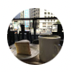

menu
YouTube
keyboard_voice
video_call
notifications

home
首頁
smart_display
Short
subscriptions
訂閱內容
你的內容
chevron_right
account_box
你的頻道
history
觀看紀錄
slideshow
你的影片
schedule
稍後觀看
thumb_up
喜歡的影片
expand_more
顯示更多
playlist_play
程式設計
playlist_play
無廣告音樂
expand_less
顯示較少
訂閱內容
ZEROBASEONE
HOOK
阿滴英文
韓勾ㄟ金針菇 찐쩐꾸
TommyTommy J...
阿心Liao
expand_more
顯示另外2個項目
快樂寶賤
滴妹
expand_less
顯示較少
探索
local_fire_department
發燒影片
music_note
音樂
movie
電影
online_prediction
直播
sports_esports
遊戲
newsmode
新聞
emoji_events
體育
podcasts
Podcast
更多YouTube功能
smart_display
YouTube Premium
smart_display
YouTube 工作室
play_circle
YouTube Music
smart_display
YouTube kids
settings
設定
flag
檢舉
help
說明
feedback
提供意見
簡介媒體版權與我們聯絡創作者廣告開發人員
條款隱私權政策與安全性YouTube 運作方式測試新功能
© 2024 Google LLC
全部
音樂
合輯
觀光
烹飪
最新上傳
已觀看
讓你耳目一新的影片
新系列來了🔥搬新家來手作煮韓式炸醬麵吃【大長金到你家ep.1一黃大謙】煮得成功嗎？
韓勾ㄟ金針菇 찐쩐꾸
觀看次數：17萬次 20小時前
二月隱藏神曲推薦✨(G)I-DLE、LE SSERAFIM跟TWICE的非主打都超讚！玟...
快樂寶賤
觀看次數：2.2萬次 15小時前
[뮤뱅 원테이크 4K] 아이브(IVE) 'After LIKE' 4K Bonus Ver. @뮤직뱅크(Music Bank) 220826
KBS Kpop
觀看次數：1921萬次 1年前
【養小孩月費超過6萬！】寶寶的中文名字？什麼時候帶寶寶回台灣🇹🇼 新手爸媽Q&A
莫彩曦Hailey
觀看次數：42萬次 1天前
【哥哥對不起😭 我在歐洲把你送的相機弄丟了…♥ 滴妹
滴妹
觀看次數：3.9萬次 2天前
[BE ORIGINAL] Stray Kids(스트레이 키즈) '락 (樂) (LALALALA)' (4K)
STUDIO CHOOM [스튜디오 춤]
觀看次數：957萬次 3個月前
🇭🇰 挑戰一個人迪士尼！最新冰雪奇緣世界❄️如何自己拍好看的照片？｜阿心
阿心Liao
觀看次數：1.7萬次 1天前
#419 Stray Kids《Maniac》Rapper 竟然也來飆高音！？ ◆嘎老師 Miss Ga｜歌...
嘎老師 Miss Ga
觀看次數：12萬次 1年前
【只剩一個月】全記錄橫濱鋼彈...QQ 第一次來橫濱自由行就為了跟你道別... (...
TommyTommy Japan
觀看次數：8.3萬次 1天前
【粿粿＆范姜的寶寶性別派對！Ft.全明星運動會三季紅隊｜吳心緹
吳心緹 Esther
觀看次數：71萬次 1年前
【還原100年日本營養午餐演變史，不可能戰爭影響那麼大耶【食代歷量#1】
HOOK
觀看次數：71萬次 1年前
Eko杜德偉 一起’‘脫掉’‘？加拿大口音超難學？天王翹臀連黑人都愛？現場求婚...
驚奇玩起來 AmazingTalker Show
觀看次數：10萬次 21小時前
[4K] 스트레이키즈 '필릭스', 미소에 느껴지는 부티나는 귀공자 ✈️Stray Kids 'Felix' 인천공...
뉴스엔·Newsen
觀看次數：1.2萬次 1天前
念大學就要花1000萬!! 去美國念書真的能把學費賺回來嗎?
阿滴英文
觀看次數：1.3萬次 2小時前
[ZE_pisode] ZEROBASEONE (제로베이스원) 불후의 명곡 ‘The Way U Are' 동방...
ZEROBASEONE
觀看次數：1.5萬次 1小時前
[뮤뱅 원테이크 4K] 아이브(IVE) 'After LIKE' 4K Bonus Ver. @뮤직뱅크(Music Bank) 220826
KBS Kpop
觀看次數：1921萬次 1年前
[BE ORIGINAL] Stray Kids(스트레이 키즈) '락 (樂) (LALALALA)' (4K)
STUDIO CHOOM [스튜디오 춤]
觀看次數：957萬次 3個月前
#419 Stray Kids《Maniac》Rapper 竟然也來飆高音！？ ◆嘎老師 Miss Ga｜歌...
嘎老師 Miss Ga
觀看次數：12萬次 1年前
合輯-LE'V(레비) '米津玄師(Kenshi Yonezu) - LADY' Cover
王子浩、米津玄師、、泰一和其他藝人
🇭🇰 挑戰一個人迪士尼！最新冰雪奇緣世界❄️如何自己拍好看的照片？｜阿心
阿心Liao
觀看次數：1.7萬次 1天前
【只剩一個月】全記錄橫濱鋼彈...QQ 第一次來橫濱自由行就為了跟你道別... (...
TommyTommy Japan
觀看次數：8.3萬次 1天前
新系列來了🔥搬新家來手作煮韓式炸醬麵吃【大長金到你家ep.1一黃大謙】煮得成功嗎？
韓勾ㄟ金針菇 찐쩐꾸
觀看次數：17萬次 20小時前
【還原100年日本營養午餐演變史，不可能戰爭影響那麼大耶【食代歷量#1】
HOOK
觀看次數：71萬次 1年前
新系列來了🔥搬新家來手作煮韓式炸醬麵吃【大長金到你家ep.1一黃大謙】煮得成功嗎？
韓勾ㄟ金針菇 찐쩐꾸
觀看次數：17萬次 20小時前
二月隱藏神曲推薦✨(G)I-DLE、LE SSERAFIM跟TWICE的非主打都超讚！玟...
快樂寶賤
觀看次數：2.2萬次 15小時前
念大學就要花1000萬!! 去美國念書真的能把學費賺回來嗎?
阿滴英文
觀看次數：1.3萬次 2小時前
[ZE_pisode] ZEROBASEONE (제로베이스원) 불후의 명곡 ‘The Way U Are' 동방...
ZEROBASEONE
觀看次數：1.5萬次 1小時前
新系列來了🔥搬新家來手作煮韓式炸醬麵吃【大長金到你家ep.1一黃大謙】煮得成功嗎？
韓勾ㄟ金針菇 찐쩐꾸
觀看次數：17萬次 20小時前
二月隱藏神曲推薦✨(G)I-DLE、LE SSERAFIM跟TWICE的非主打都超讚！玟...
快樂寶賤
觀看次數：2.2萬次 15小時前
[뮤뱅 원테이크 4K] 아이브(IVE) 'After LIKE' 4K Bonus Ver. @뮤직뱅크(Music Bank) 220826
KBS Kpop
觀看次數：1921萬次 1年前
【養小孩月費超過6萬！】寶寶的中文名字？什麼時候帶寶寶回台灣🇹🇼 新手爸媽Q&A
莫彩曦Hailey
觀看次數：42萬次 1天前
【哥哥對不起😭 我在歐洲把你送的相機弄丟了…♥ 滴妹
滴妹
觀看次數：3.9萬次 2天前
[BE ORIGINAL] Stray Kids(스트레이 키즈) '락 (樂) (LALALALA)' (4K)
STUDIO CHOOM [스튜디오 춤]
觀看次數：957萬次 3個月前
#419 Stray Kids《Maniac》Rapper 竟然也來飆高音！？ ◆嘎老師 Miss Ga｜歌...
嘎老師 Miss Ga
觀看次數：12萬次 1年前
【只剩一個月】全記錄橫濱鋼彈...QQ 第一次來橫濱自由行就為了跟你道別... (...
TommyTommy Japan
觀看次數：8.3萬次 1天前
【還原100年日本營養午餐演變史，不可能戰爭影響那麼大耶【食代歷量#1】
HOOK
觀看次數：71萬次 1年前
[4K] 스트레이키즈 '필릭스', 미소에 느껴지는 부티나는 귀공자 ✈️Stray Kids 'Felix' 인천공...
뉴스엔·Newsen
觀看次數：1.2萬次 1天前
【粿粿＆范姜的寶寶性別派對！Ft.全明星運動會三季紅隊｜吳心緹
吳心緹 Esther
觀看次數：71萬次 1年前
Eko杜德偉 一起’‘脫掉’‘？加拿大口音超難學？天王翹臀連黑人都愛？現場求婚...
驚奇玩起來 AmazingTalker Show
觀看次數：10萬次 21小時前
 YouTube
YouTube
YouTube
YouTube